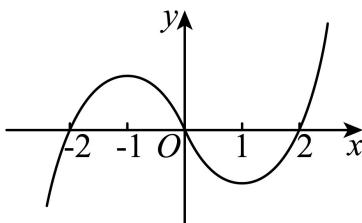
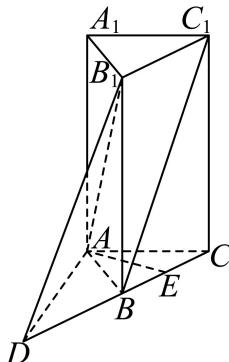
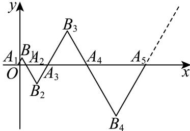

填空题
按本区原卷题号顺序排列。
静安 · 第1题 ★☆☆☆☆ · 教师预估
本题资料或解析有待核事项，预览不可作为已审定成品。
已知全集为R，集合 A={x∣−2<x≤1} }，则 A =
静安 · 第2题 ★☆☆☆☆ · 教师预估
不等式 x+22x−1< 0的解集为
静安 · 第3题 ★☆☆☆☆ · 教师预估
椭圆 4x2+3y2=1 的离心率是
静安 · 第4题 ★★☆☆☆ · 教师预估
已知随机变量 X服从二项分布 B(n,p) ，若 E(X) = 30，D(X) = 20，则 P =
静安 · 第5题 ★★☆☆☆ · 教师预估
已知log3 2 = a，则log2 48 = ．（请用含a的代数式表达）
静安 · 第6题 ★★☆☆☆ · 教师预估
已知 ∣sin(4π−x)=53 ，则sin2x的值为
静安 · 第7题 ★★☆☆☆ · 教师预估
设一个罐子中有大小与质地相同的黑、白、红三个球，不放回的每次摸一个球，设第一次没有摸到黑球是事件A，第二次没有摸到黑球是事件B，则 P(B∣A) )的值为
静安 · 第8题 ★★★☆☆ · 教师预估
本题资料或解析有待核事项，预览不可作为已审定成品。
设某港口水的深度 y（米）关于时间 t（时）的函数近似满足 y=h+Asin(ωt+φ)。根据某一天的测量，港口水的深度在早上3点达到最大值18米，之后持续减少，并在上午9点达到最小值14米。则该港口水的深度 y（米）关于时间 t（时）的函数的近似表达式为 ______。
静安 · 第9题 ★★★☆☆ · 教师预估
用总长为14.8m的钢条制作一个长方体容器的框架，且容器底面的长边比短边长0.5m（不计损耗）若要使该容器的容积最大，则容器的高为 m
静安 · 第10题 ★★☆☆☆ · 教师预估
已知 a>b,ab=1 ，则 a−ba2+b2 的最小值是
静安 · 第11题 ★★★☆☆ · 教师预估
从m个男生和n个女生 (10≥m>n≥4) 中任选2个人当队长，假设事件A表示选出的2人性别相同，事件B表示选出的2人性别不同．如果事件A的概率和事件B的概率相等，那么m−n的可能值为
静安 · 第12题 ★★★★☆ · 教师预估
在边长为1的正三角形ABC的边AB、AC上分别取D、E两点，若沿线段DE折叠该三角形时，顶点A恰好落在边BC上．则线段AD的长度的最小值为
选择题
按本区原卷题号顺序排列。
静安 · 第13题 ★★☆☆☆ · 教师预估
∗m<2∗ 是“一元二次不等 ‘x2+mx+1> 0的解集为R”的
A. 充分不必要条件
B. 必要不充分条件
C. 充要条件
D. 既不充分也不必要条件
静安 · 第14题 ★★☆☆☆ · 教师预估
本题资料或解析有待核事项，预览不可作为已审定成品。
若复数 z=b+iai(a⋅b∈R ，i是虚数单位）在复平面上对应的点位于第二象限，则（ ）
A. a > 0且b > 0
B. a > 0且b < 0
C. a<0E.b>0
D. a<0.Hb<0
静安 · 第15题 ★★★☆☆ · 教师预估
设f(x)是一个三次函数，f′(x)为其导函数.图中所示的是 ⋅y=xf′(x) )的图像的一部分.则f (x)的极大值与极小值分别是（ ）.

A. f (1)与f (−1)
B. f (−1)与f (1)
C. f (−2)与f (2)
D. f (2)与f (−2)
静安 · 第16题 ★★★★☆ · 教师预估
设函数y = f (x)的定义域为R，若f (0) = 2025，且对任意 x∈R ，满足 f(x+1)−f(x)≤2x f(x+2)−f(x)≥3×2x ，则f(2025)的值为（ ）
A. 22025+2024
B. 22024+2025
C. 22025+2025
D. 以上答案均不对
解答题
按本区原卷题号顺序排列。
静安 · 第17题 ★★★☆☆ · 教师预估
本题资料或解析有待核事项，预览不可作为已审定成品。
已知向 Eq.Eq.=(cos(x+6π),sin(x+6π)),b=(cos(x+6π),−sin(x+6π)) ，记 f(x)=a⋅b
(1) (6分)求函数 y=f(x) 的最小正周期；
(2) (8分)若函数 [y=f(x+θ) （其中常数 θ∈(0,2π)) ）为奇函数，求θ的值
静安 · 第18题 ★★★☆☆ · 教师预估
本题资料或解析有待核事项，预览不可作为已审定成品。
某校高三学生体检后，为了解高三学生的视力情况，该校从高三六个班的300名学生中以班为单位（每班学生50人），每班按随机抽样方法抽取了8名学生的视力数据.其中高三（1）班抽取的8名学生的视力数据与人数见下表：
| 视力 |
4.0 |
4.1 |
4.2 |
4.3 |
4.4 |
4.5 |
4.6 |
4.7 |
4.8 |
4.9 |
5.0 |
5.1 |
5.2 |
5.3 |
| 人数 |
|
|
|
|
2 |
|
2 |
|
2 |
1 |
|
1 |
|
|
（1）用上述样本数据估计高三（1）班学生视力的平均值；
（2）已知其余五个班学生视力的平均值分别为4.3、4.4、4.5、4.6、4.8.若从这六个班中任意抽取两个班学生视力的平均值作比较，求抽取的两个班学生视力的平均值之差的绝对值不小于0.2的概率.
静安 · 第19题 ★★★★☆ · 教师预估
如图，在正三棱柱 ABC−A1B1C1 中， AA1=2AC=4 ，延长CB至D，使 CB=BD ，E是线段BC的中点

(1) (8分)求证：
①直线 C1B// 平面 AB1D ；
② AE⊥DB1
(2) (6分)求二面角 B1−AD− C的正弦值
静安 · 第20题 ★★★★☆ · 教师预估
本题资料或解析有待核事项，预览不可作为已审定成品。
如图，在直角坐标平面 xOy 中， △AiBiAi+1 中 (i=1,2,⋅⋅⋅,n,⋅⋅⋅) 为正三角形，且满足OA1=(−41,0),AiAi+1=(2i−1,0)

(1) (4分)求点 An 的横坐标 Xn 关于正整数n的表达式；
(2) (6分)求证：点 B1, B2,..., Bn.. 在抛物线Γ： y2=3x. 上；
(3) (8分)过（2）中抛物线Γ： y2=3x 的焦点F作两条互相垂直的弦AC和BD，求四边形ABCD面积的最小值
静安 · 第21题 ★★★★★ · 教师预估
本题资料或解析有待核事项，预览不可作为已审定成品。
若存在实数常数 k，m，对任意 x∈D，不等式 f(x)≥kx+m≥g(x) 恒成立，则称直线 y=kx+m 是函数 y=f(x) 和函数 y=g(x) 在 D 上的分界线。
(1) (4分) 请写出函数 y=21x2 和函数 y=lnx 在 (0,+∞) 上的一条斜率为1的分界线；（不必证明）
(2) (6分) 求证：函数 y=x+x1 和函数 y=2−x1 在 (0,+∞) 上过坐标原点的分界线有且只有一条；
(3) (8分) 试探究函数 y=ex(x+1)（e 为自然对数的底数）和函数 y=−x2+2x+1 在 R 上是否存在分界线。若存在，求出分界线方程；若不存在，请说明理由。